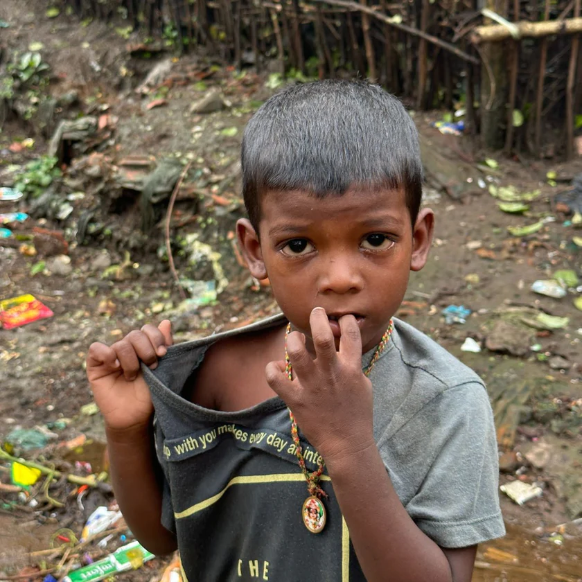
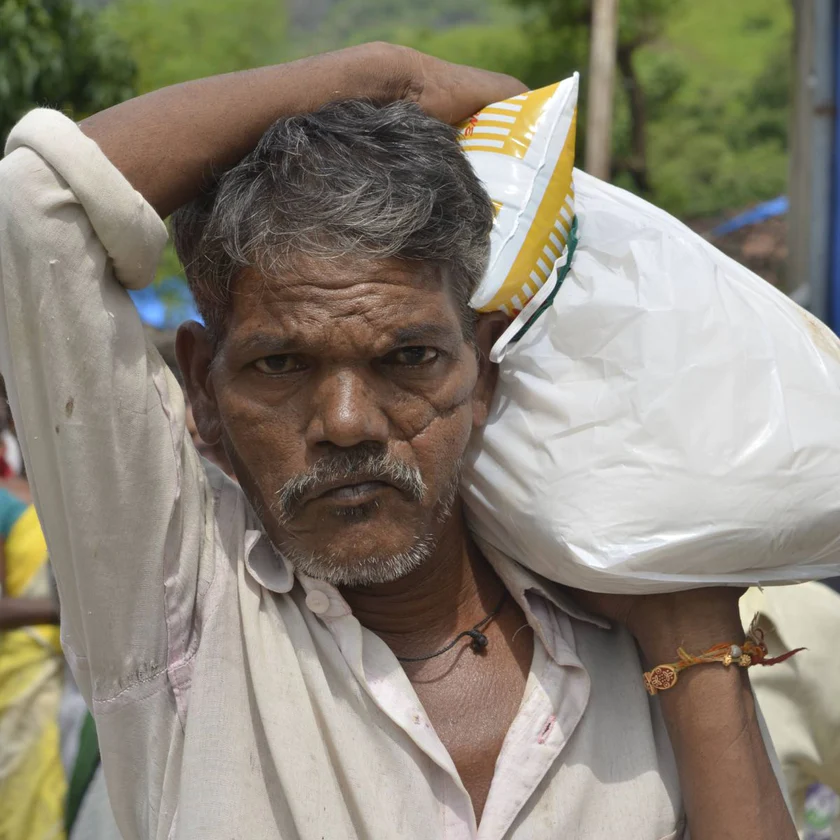
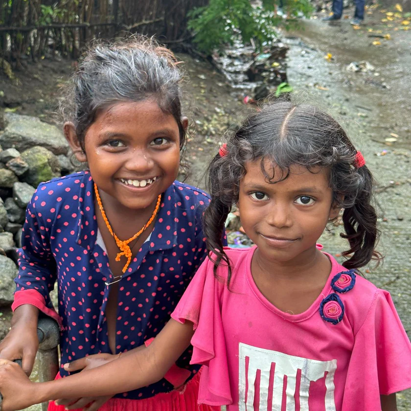

This August, as India celebrates its 77th Independence Day, The Bombay Canteen is excited to bring back its annual Independence Day Dawaat, our annual fundraiser that celebrates good food for a good cause.

Mission 2023
Hunger is a pervasive issue that continues to afflict millions around the world. Despite progress in various areas, many regions, including rural India, still face the grim reality of food insecurity. Together, let's work towards a world where no one has to endure the pangs of hunger.
This year, let's pass on the plate!
Proceeds from the Independence Day Daawat will be converted to ration kits with the help of JOSHConnect, a foundation that connects NGOs, beneficiaries and donors across the world. These ration kits will then be distributed across 2000+ families in Raigad & Palghar, Maharashtra.
80G Receipt will be provided to all donors

Donate for
Monthly Ration kits

Pay as you Like to
Pass on the Plate
What we did with last year’s donations
Our Partners
Proceeds from the Independence Day Daawat will be converted to ration kits with the help of JOSHConnect. These ration kits will then be distributed with the help of a leading volunteer-run organisation across villages in the Raigad and Palghar districts of Maharashtra.
The organization is a volunteer-based, zero-funds organization that works to get surplus food from restaurants and the community to serve less fortunate people. Their vision is to beat global hunger and bring out the best in humanity using food as the medium.
Every Independence Day, they take up a mission to inch toward their global vision, and this year, they aim to feed 10 Million Meals over 10 days across 1000 villages
The Bombay Canteen is proud to collaborate with them to be a part of their mission this year.